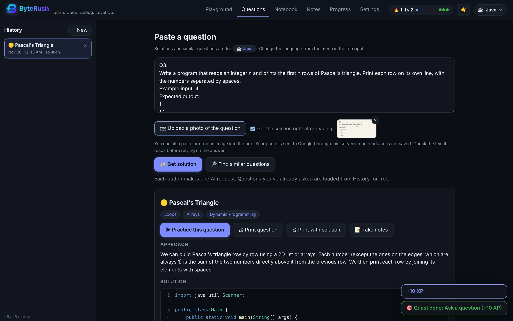
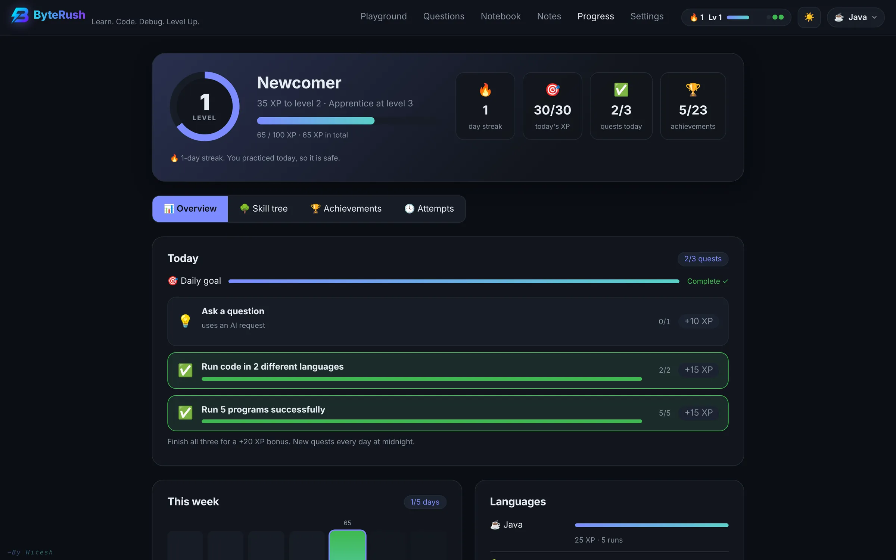
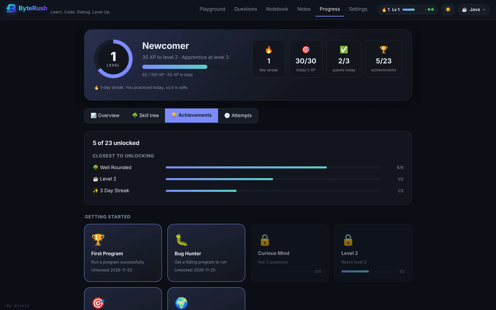

Learn. Code. Debug. Level Up.
A coding-practice app that runs on your own computer. Write code, press Run, and see the output right beside it. Running code, your notebook and notes keep working with the Wi-Fi off.
$ byterush --tour
The whole app in under 90 seconds.
Real recordings of ByteRush, stitched together: opening it, writing and running code, the Error Coach, a photo question, the notebook and your progress.
$ byterush run Main.java
Write it. Run it. See it.
Type your program, give it input, press Run. Output shows up right next to your code, compile errors are marked on the exact line, and crashes come with an explanation.
- Input tabType what your program reads, just like a terminal.
- OutputResults land beside your code the moment it finishes.
- Line markersCompile errors point at the exact line that broke.
- Crash notesRuntime errors are explained in plain language.
$ javac Main.java
Red lines become lessons.
A missing semicolon or a misspelled variable stops the compile. ByteRush shows what broke, where, and why. Drag the handle to watch the same program get fixed.


- ExplanationWhat the error means
- HintWhere to look
- Stronger hintWhat to change
- The fixOnly when you ask for it
What the Error Coach said about this exact program
“Take a close look at the line where total is created and given a starting value of 0.”
“Check the very end of line 4. Is something missing that every other similar line has?”

$ byterush read question.jpg
Snap the question. Skip the typing.
Upload a photo of a question, paste a screenshot, or drop an image into the box. ByteRush reads it into text, writes a solution in your language, and checks it against test cases before showing it to you. The photo is sent to Google's Gemini API to be read; ByteRush doesn't keep it.

- upload, paste or drop
- read into text
- solve in your language
- verify with tests
$ byterush submit
Graded like the real thing.
Run your solution with your own input, or submit it against hidden tests that never leave your computer. You get a score out of 100.
- Correctness
- 70 of 70: all 5 hidden tests passed
- Efficiency
- 14 of 15: rated “Excellent”, O(n²) time
- Code quality
- 14 of 15: “clean, well-structured”
5 / 5 tests passed → 70 + 14 + 14 = 98
This is a real submission for the Pascal's triangle question above. Correctness comes from the hidden tests; efficiency and code quality are rated by the AI in one request and scale with the share of tests passed.
$ byterush save --folder Arrays
A notebook that runs.
Paste a question and your code onto a ruled page and save it as Q1, Q2, Q3. Sort them into folders, star the important ones, and run any of them again with one click.
Notes, with code you can run.
Write what you learned in Markdown, tag it, pin it, and keep a runnable template right beside it.

$ byterush stats
Watch yourself level up.
XP comes only from real practice and is capped per day. Streaks forgive a missed day. Skills grow as you use them, and achievements unlock along the way.



- 🏆First ProgramRun a program successfully
- 🐛Bug HunterGet a failing program to run
- 🧭ExplorerPractice 3 different skills
- ✨3 Day StreakPractice 3 days in a row
$ wifi off
Wi-Fi off. Still compiling.
ByteRush runs your code on your own computer, with Java built in. Planes, trains and patchy hostel Wi-Fi are all fine.
- Run code in every language
- Open your notebook
- Read and write notes
- Track XP, streaks and skills
- AI features need internet and a free Gemini key
$ byterush settings --key
AI features use your own free key.
ByteRush's AI answers come from Google's Gemini. ByteRush doesn't run an AI server of its own, so each person adds a free Gemini key from Google. Google's free tier has daily limits; if you reach one, ByteRush tells you.
Needs a key
- Solutions in Questions, typed or from a photo
- Reading photos of questions
- Similar questions and LeetCode picks
- Error Coach explanations and hints
- Analyze, Visualize and Dry run
- Efficiency and code quality scores in Practice
Works without a key
- Running code in all six languages
- Compile errors on the exact line, and crash output
- Notebook and notes
- XP, streaks, skills and achievements
- Submitting to hidden tests, once a question has them
- HTML, CSS and JavaScript with live preview
- Get a key. Open Google AI Studio, sign in with a Google account and create an API key. It's free.
- Paste it into ByteRush. Open the Settings tab, paste the key and press Test key.
- That's it. The key is saved on your computer and used only to talk to Gemini.
$ byterush --where-is-my-data
What stays on your computer, and what goes online.
Stays on your computer
- Your code, and running it
- Programs compile and run on your own computer, not on a server.
- Questions, notebook, notes and settings
- Saved as files in the
ByteRush-Datafolder in your home folder. - XP, streaks and achievements
- Kept in the app's own storage on your computer.
- Your Gemini key
- Saved in
ByteRush-Data/settings.jsonand sent only to Google with AI requests.
Goes online, only when you use an AI feature
- What is sent
- The question text or photo, and the code and error message you ask about. For Practice scores, your code.
- Where it goes
- Straight from ByteRush on your computer to Google's Gemini API, with your key. Google handles it under the Gemini API terms.
- Photos
- Sent to be read into text. ByteRush doesn't save them.
- Nothing else
- No account, no sign-up and no analytics in the app.
Two exceptions to know about: this website loads its fonts from Google Fonts and its release details from GitHub. And in the online demo, your code runs on the demo server and anything saved there is temporary.
$ byterush --lang
Pick your language.
Each language keeps its own history, notebook and notes. Questions and practice tests are written in the language you choose. Java comes built in; Python, C and C++ use the tools installed on your computer.

Why it feels different.
- Your computer does the work.Code compiles and runs locally, so there's no queue and no server waking up.
- No connection needed.Run, save and practice anywhere. Java is already inside.
- Feedback in a blink.Output, error lines and crash notes the moment a run ends.
- AI when you want it.Solutions, hints and analysis with your own free Gemini key.
- Practice with structure.Questions, hidden tests, scores and a notebook that keeps it all.
- Progress you can see.XP, streaks, a skill tree and 23 achievements.
$ byterush --try
Try it right here.
This is the real ByteRush, running on a small free server. It's slower than the app, and it can take up to a minute to wake up the first time. Add your own free Gemini key in its Settings to try the AI features.
The server sleeps when nobody is using it.
$ byterush install
Download ByteRush.
The latest version. Free.
macOS 12 Monterey or later .dmgyour computer macOSIntelIntel Macs (x64)
macOS 12 Monterey or later .dmgyour computer Windows10 and 1164-bit (x64)
Installer, no admin needed .exeyour computer
Not sure which Mac you have? Open the Apple menu and choose About This Mac. If it says “Chip: Apple M…”, choose Apple Silicon.
Check your download (SHA-256)
GitHub publishes a fingerprint for every file. If the one you calculate matches, your file is exactly the one released here.
- Loading from GitHub…
On a Mac, open Terminal and run shasum -a 256 ~/Downloads/ByteRush-mac-arm64.dmg. On Windows, open PowerShell and run Get-FileHash $HOME\Downloads\ByteRush-windows-x64.exe.
What's new
- 1.0.2AI requests no longer stall when Google's main model is overloaded: a request that hangs is skipped after 45 seconds and ByteRush tries newer backup models. Removed backup models Google no longer offers to new users.
- 1.0.1The code editor is now built into the app, so it works fully offline. Before, it loaded from the internet.
- 1.0.0First desktop release for macOS (Apple Silicon and Intel) and Windows, in its own window, with Java built in.
Install in a minute.
Why you'll see a warning
ByteRush is a free project. It isn't signed with an Apple Developer ID or notarized by Apple, and the Windows installer isn't code-signed, because those certificates are paid. So the first time you open it, macOS or Windows asks you to confirm. The steps below approve ByteRush only; they don't turn off any security protection. Download ByteRush only from this page or its GitHub releases page, and check the fingerprint above if you want to be sure.
- Open the downloaded
ByteRush-mac-….dmgand drag ByteRush into Applications. - Open ByteRush from Applications. macOS says Apple “could not verify” it, because it isn't notarized. Click Done.
- Open System Settings → Privacy & Security, scroll down to the message about ByteRush and click Open Anyway, then confirm with your password or Touch ID.
- That's it. From now on ByteRush opens with a normal double-click. You never need to change other security settings.
Python, C and C++ use Apple's free developer tools. If ByteRush says they're missing, open Terminal and run xcode-select --install. Java is already included.
- Run the downloaded
ByteRush-windows-x64.exe. - Windows SmartScreen may say “Windows protected your PC”, because the installer isn't code-signed. Click More info, check the app name says ByteRush, then click Run anyway.
- Follow the installer. ByteRush appears on your Desktop and in the Start menu.
Java is already included. For Python, install it from python.org (tick “Add to PATH”). For C and C++, install WinLibs (gcc). Restart ByteRush afterwards.
Just want a quick look?
Try ByteRush in your browser first. It's slower than the app because it runs on a small free server, and it may take up to a minute to wake up.
Try the live demo on this page$ byterush --help
Questions, answered.
Is ByteRush free?
Yes. The app is free to download and use, with no account. The AI features use your own free Gemini key from Google, which has daily limits on Google's free tier.
Does it work offline?
Yes, for running code, the notebook, notes and your progress. Java is built in. Python, C and C++ use the tools installed on your computer (on a Mac, Apple's free developer tools). The AI features need internet.
Why do I need a Gemini API key?
The AI features (solutions, photo reading, the Error Coach, analysis and scores) are answered by Google's Gemini, and ByteRush doesn't run an AI server of its own. Each person uses their own free key. How to get one.
Where is my code stored?
On your computer. Questions, the notebook, notes and settings are files in the ByteRush-Data folder in your home folder. XP and streaks are in the app's own storage on your computer.
Does ByteRush upload my code?
Not to run it: programs run on your computer. When you use an AI feature, the question, the code and the error you ask about are sent to Google's Gemini API with your key. What's sent, and when.
Which programming languages are supported?
Java, Python, C, C++, JavaScript, and HTML with CSS and JavaScript (with a live preview).
Does it support Windows and macOS?
Yes: Windows 10 and 11 (64-bit), and macOS 12 Monterey or later on both Apple Silicon and Intel Macs.
How do I install ByteRush?
Download the file for your computer above and follow the install steps. Because the app isn't signed yet, you confirm it once the first time.
How do I uninstall it?
On a Mac, drag ByteRush from Applications to the Trash. On Windows, open Settings → Apps → Installed apps, find ByteRush and choose Uninstall. Your saved work stays in the ByteRush-Data folder in your home folder, and XP and streaks stay in the app's storage (~/Library/Application Support/ByteRush on a Mac, %APPDATA%\ByteRush on Windows). Delete those too if you want to remove everything.
How often is it updated?
There's no fixed schedule, and the app doesn't update itself. New versions appear on this page and on GitHub; download the new one and install it over the old one. Your work in ByteRush-Data is kept.